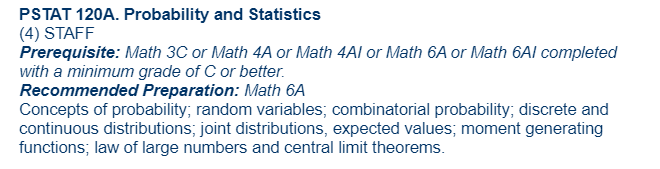

Exam P
This exam is the same for both SOA and CAS. It is administered by the SOA.
UCSB Course(s)
PSTAT 120A covers most of the syllabus.
SOA SYllabus
The SOA syllabus lists all the textbooks and chapters you have to study to ace this exam.
Problem Bank by Prof.Krzysztof Ostaszewski
Quiz yourself!
The Elias Saab Interactive Online Practice
The MSU Actuarial Online Exam P is an excellent resource. Take a full practice exam, get your score followed by full solutions.
Practice Problems
Practice Problems from Prof. Hildebrand at UIUC.
An excellent collection of problems with answer keys and full solutions.
Free online manual by Dr. Marcel Finan
Click here
More resources
Resources widely available for older exams can be used whenever material overlaps.